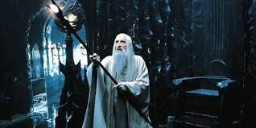
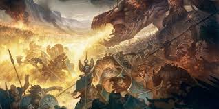
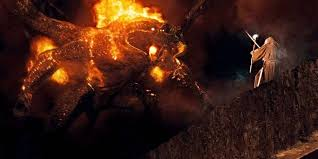

Overview
The Maiar are divine spirits created by Eru Ilúvatar before the shaping of Arda. They are lesser Ainur who entered the world to assist the Valar in governing and shaping it. Some Maiar took physical form and intervened directly in Middle-earth's affairs, becoming key players in the great conflicts.
Notable Maiar
-
Sauron – Former servant of Morgoth, primary antagonist of the Second and Third Ages; creator of the One Ring
-
Gandalf (Olórin) – One of the five Istari sent to aid Middle-earth against Sauron; known for wisdom and leadership
-
Saruman (Curunír) – Head of the Istari order before his fall into corruption
 -
Radagast the Brown – Istari focused on nature and animals
-
The Balrogs – Maiar corrupted by Morgoth, fearsome fire-demons
Role in Middle-earth
The Maiar influenced the shaping of the world and participated in major historical events. They often acted through chosen agents or in disguised physical forms. Their powers ranged from manipulation of fire and light to command over nature and spirit.
Major Battles & Events
-
War of the Jewels – Balrogs fought alongside Morgoth during the First Age against the Elves and Men
 -
Battle of the Last Alliance – Sauron was defeated, and the One Ring taken from him by Isildur
-
Fall of Gandalf in Moria – Gandalf battles the Balrog (Durin’s Bane) in the depths of Khazad-dûm, leading to his death and later resurrection as Gandalf the White
 -
Battle of Helm’s Deep – Gandalf arrives with reinforcements, turning the tide of battle
-
Siege of Minas Tirith and Battle of the Pelennor Fields – Sauron’s forces besiege Gondor; Gandalf leads defense efforts
-
Battle of the Black Gate – Gandalf and the forces of the West confront Sauron’s armies to distract him from Frodo
Image Placeholder
[Insert images: Gandalf, Saruman, Sauron, Balrog]